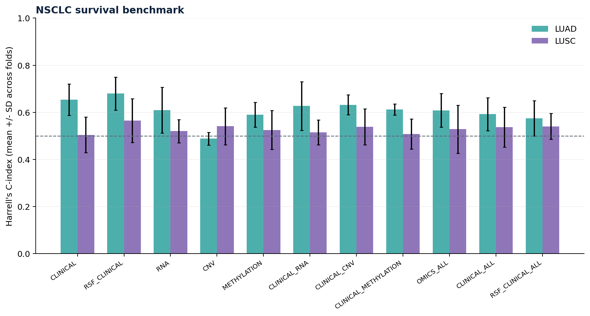
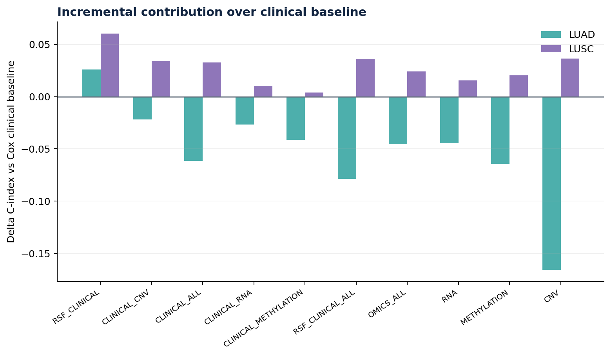
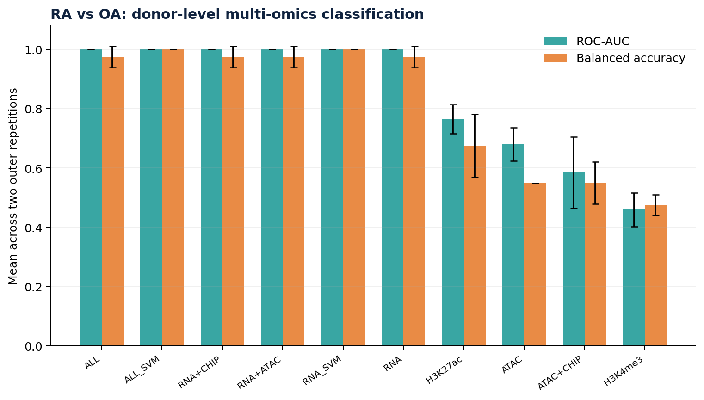
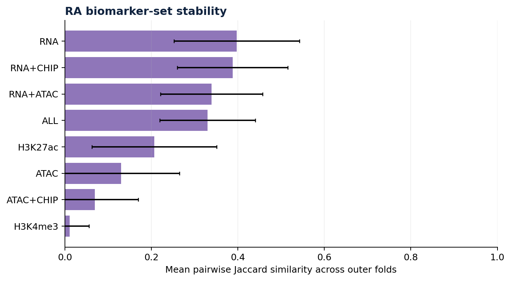
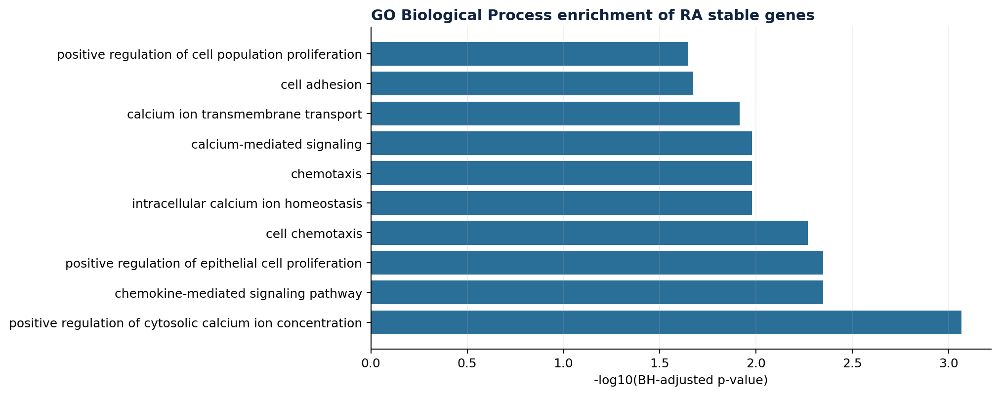

MOSAIC-3
Executive summary
MOSAIC-3 evaluates two linked questions: (1) how much each molecular layer adds to clinical or transcriptomic baselines, and (2) how reproducibly models prioritize genes and pathways when the training samples and available layers change. A cross-indication comparison is used to generate biological hypotheses, not to imply shared causation or cellular equivalence.
1. Cohorts and data provenance
NSCLC: TCGA-LUAD / TCGA-LUSC
Public UCSC Xena cohort matrices were harmonized using primary tumour samples (sample type 01), one deterministic sample per case, complete RNA/CNV/HM450 profiles, and valid overall-survival time/event fields.
| cohort | n_model_complete | events | censored | RNA_features | CNV_features | METHYLATION_features |
|---|---|---|---|---|---|---|
| LUAD | 440.000 | 157.000 | 283.000 | 20530.000 | 24776.000 | 396065.000 |
| LUSC | 360.000 | 154.000 | 206.000 | 20530.000 | 24776.000 | 396065.000 |
Rheumatoid arthritis: synovial tissue
GEO accessions: GSE112656 (RNA-seq), GSE112654 (ATAC-seq), and GSE112655 (ChIP-seq). The benchmark uses 10 RA and 10 OA donors with four aligned layers: RNA, ATAC, H3K27ac and H3K4me3. WGBS and raw FASTQ/SRA are excluded.
- RNA features: 57,763
- ATAC features: 17,939
- H3K27ac features: 17,102
- H3K4me3 features: 16,290
MC3 gene-level SNV files are acquired as an exploratory layer but excluded from the primary benchmark until callability/coverage can be established. No controlled-access data are required.
2. Methodology
NSCLC survival
- Clinical-only baseline with age, sex and stage where available.
- Cox Elastic Net with nested tuning and repeated outer folds.
- RNA, CNV and HM450 are assessed individually and in combinations.
- Random Survival Forest is included as a sensitivity comparison.
- Harrell's C-index is reported by model and outer fold.
RA classification
- Donor-level, stratified outer folds; each donor stays in one test fold per repetition.
- Elastic Net logistic regression with inner-fold lambda selection.
- Single-layer and multi-layer ablations are compared with RNA-only baseline.
- Linear SVM is an additional sensitivity analysis.
- Metrics: ROC-AUC, balanced accuracy, sensitivity, specificity, MCC and Brier score.
3. NSCLC survival results

LUAD model metrics
| model | mean_c_index | sd_c_index | folds |
|---|---|---|---|
| CLINICAL | 0.654 | 0.067 | 5.000 |
| CLINICAL_ALL | 0.592 | 0.070 | 5.000 |
| CLINICAL_CNV | 0.632 | 0.042 | 5.000 |
| CLINICAL_METHYLATION | 0.613 | 0.023 | 5.000 |
| CLINICAL_RNA | 0.627 | 0.104 | 5.000 |
| CNV | 0.488 | 0.027 | 5.000 |
| METHYLATION | 0.589 | 0.053 | 5.000 |
| OMICS_ALL | 0.609 | 0.071 | 5.000 |
| RNA | 0.609 | 0.097 | 5.000 |
| RSF_CLINICAL | 0.680 | 0.070 | 5.000 |
| RSF_CLINICAL_ALL | 0.575 | 0.075 | 5.000 |
LUSC model metrics
| model | mean_c_index | sd_c_index | folds |
|---|---|---|---|
| CLINICAL | 0.504 | 0.075 | 5.000 |
| CLINICAL_ALL | 0.537 | 0.085 | 5.000 |
| CLINICAL_CNV | 0.538 | 0.076 | 5.000 |
| CLINICAL_METHYLATION | 0.509 | 0.064 | 5.000 |
| CLINICAL_RNA | 0.515 | 0.052 | 5.000 |
| CNV | 0.541 | 0.079 | 5.000 |
| METHYLATION | 0.525 | 0.082 | 5.000 |
| OMICS_ALL | 0.529 | 0.102 | 5.000 |
| RNA | 0.520 | 0.049 | 5.000 |
| RSF_CLINICAL | 0.565 | 0.093 | 5.000 |
| RSF_CLINICAL_ALL | 0.541 | 0.054 | 5.000 |

LUAD. RSF with clinical predictors achieved the highest archived mean C-index (0.680, SD 0.070), compared with the Cox clinical baseline (0.654, SD 0.067). Among the Cox modality combinations, none exceeded the clinical-only baseline in this run; clinical + CNV reached 0.632.
LUSC. RSF with clinical predictors achieved 0.565 (SD 0.093), compared with the Cox clinical baseline at 0.504 (SD 0.075). The highest Cox multi-omic combination was clinical + CNV at 0.538; the full clinical + all-omics model reached 0.537.
4. RA multi-omics classification

| model | n_repetitions | mean_auc | sd_auc | mean_balanced_accuracy | sd_balanced_accuracy | mean_mcc | mean_brier |
|---|---|---|---|---|---|---|---|
| ALL | 2.000 | 1.000 | 0.000 | 0.975 | 0.035 | 0.952 | 0.136 |
| ALL_SVM | 2.000 | 1.000 | 0.000 | 1.000 | 0.000 | 1.000 | NA |
| ATAC | 2.000 | 0.680 | 0.057 | 0.550 | 0.000 | 0.122 | 0.233 |
| ATAC+CHIP | 2.000 | 0.585 | 0.120 | 0.550 | 0.071 | 0.200 | 0.232 |
| H3K27ac | 2.000 | 0.765 | 0.049 | 0.675 | 0.106 | 0.353 | 0.199 |
| H3K4me3 | 2.000 | 0.460 | 0.057 | 0.475 | 0.035 | -0.229 | 0.282 |
| RNA | 2.000 | 1.000 | 0.000 | 0.975 | 0.035 | 0.952 | 0.162 |
| RNA_SVM | 2.000 | 1.000 | 0.000 | 1.000 | 0.000 | 1.000 | NA |
| RNA+ATAC | 2.000 | 1.000 | 0.000 | 0.975 | 0.035 | 0.952 | 0.143 |
| RNA+CHIP | 2.000 | 1.000 | 0.000 | 0.975 | 0.035 | 0.952 | 0.166 |
RNA-only and several RNA-containing configurations achieved a mean AUC of 1.000 across the two archived repetitions; RNA-only and the ALL multi-omics model had mean balanced accuracy of 0.975. The SVM sensitivity variants reached 1.000 for both reported metrics, but do not provide a Brier score. ATAC-only and H3K4me3-only performance was lower and less balanced. These unusually high values are highly susceptible to overfitting and sampling variation with n=20 and must be treated as exploratory.
5. Biomarker stability

| model | comparisons | mean_jaccard | sd_jaccard |
|---|---|---|---|
| RNA | 45.000 | 0.398 | 0.145 |
| ATAC | 44.000 | 0.130 | 0.135 |
| H3K27ac | 45.000 | 0.207 | 0.144 |
| H3K4me3 | 17.000 | 0.011 | 0.045 |
| RNA+ATAC | 45.000 | 0.339 | 0.118 |
| RNA+CHIP | 45.000 | 0.388 | 0.128 |
| ATAC+CHIP | 39.000 | 0.069 | 0.101 |
| ALL | 45.000 | 0.330 | 0.110 |
RNA-only had mean Jaccard similarity 0.398 (45 pairwise comparisons), followed by RNA+CHIP at 0.388 and RNA+ATAC at 0.339. H3K4me3-only had the lowest reported stability (0.011, 17 comparisons). The archived RA feature table was audited to remove duplicate feature selections within the same model/repetition/fold, so selection frequencies no longer exceed 1.0. Because archived feature identifiers omitted modality prefixes, exact historical per-layer attribution cannot be reconstructed; the updated R source now preserves modality-qualified column names in future runs.
6. Cross-indication comparison and biological grounding
| RA_stable_genes | LUAD_stable_genes | LUSC_stable_genes | shared_RA_LUAD | shared_RA_LUSC | note |
|---|---|---|---|---|---|
| 63.000 | 503.000 | 38.000 | 3.000 | 0.000 | Exploratory overlap of stable gene symbols; not causal; genes with unmappable probe IDs excluded. |
Three mapped gene symbols were shared between RA and LUAD stable-feature sets: NR0B1, PAX9 and SPINK1. No mapped shared genes were reported for RA and LUSC in the archived comparison.
| gene_symbol | context | RA_selection_frequency | NSCLC_selection_frequency |
|---|---|---|---|
| NR0B1 | RA_LUAD_shared | 0.100 | 0.400 |
| PAX9 | RA_LUAD_shared | 0.100 | 0.200 |
| SPINK1 | RA_LUAD_shared | 0.100 | 0.200 |

| GO | Description | Count | pvalue | padj |
|---|---|---|---|---|
| GO:0007204 | positive regulation of cytosolic calcium ion concentration | 5.000 | 0.000 | 0.001 |
| GO:0070098 | chemokine-mediated signaling pathway | 3.000 | 0.001 | 0.004 |
| GO:0050679 | positive regulation of epithelial cell proliferation | 3.000 | 0.001 | 0.004 |
| GO:0060326 | cell chemotaxis | 3.000 | 0.001 | 0.005 |
| GO:0006874 | intracellular calcium ion homeostasis | 3.000 | 0.003 | 0.011 |
| GO:0006935 | chemotaxis | 3.000 | 0.004 | 0.011 |
| GO:0019722 | calcium-mediated signaling | 3.000 | 0.004 | 0.011 |
| GO:0070588 | calcium ion transmembrane transport | 3.000 | 0.005 | 0.012 |
| GO:0007155 | cell adhesion | 5.000 | 0.011 | 0.021 |
| GO:0008284 | positive regulation of cell population proliferation | 5.000 | 0.013 | 0.023 |
| GO:0030154 | cell differentiation | 4.000 | 0.070 | 0.115 |
| GO:0006954 | inflammatory response | 3.000 | 0.094 | 0.141 |
| GO:0006955 | immune response | 3.000 | 0.119 | 0.165 |
| GO:0043066 | negative regulation of apoptotic process | 3.000 | 0.147 | 0.189 |
| GO:0045892 | negative regulation of DNA-templated transcription | 3.000 | 0.202 | 0.242 |
| GO:0045944 | positive regulation of transcription by RNA polymerase II | 5.000 | 0.245 | 0.275 |
| GO:0007165 | signal transduction | 4.000 | 0.405 | 0.421 |
| GO:0006357 | regulation of transcription by RNA polymerase II | 5.000 | 0.421 | 0.421 |
GO Biological Process results include chemokine-mediated signalling, chemotaxis, cell adhesion and calcium-related processes among the adjusted-significant terms. This is an exploratory over-representation analysis; it does not demonstrate disease mechanism, causal direction, or cell-state equivalence between synovial fibroblasts and cancer-associated fibroblasts.
7. Computational budget and reproducibility
The archived benchmark used a reduced execution budget because of the submission time window and available laptop compute capacity: NSCLC used one outer repetition with five folds, two inner folds, up to 250 features per layer and eight lambda values; RA used two outer repetitions with five folds, three inner folds and up to 120 features per layer. The repository configuration is set to a fuller jury rerun with three outer repetitions for both NSCLC and RA, five outer folds, three inner folds and the higher feature/lambda settings defined in the configuration. This fuller run is expected to take substantially longer and may require more memory; the archived metrics in this report will not change unless the benchmark is rerun.
The pipeline is fresh-start capable: it downloads public TCGA/Xena and GEO inputs, prepares aligned sample/donor matrices, runs preflight QC, benchmarks the models, performs cross-indication enrichment and generates the report. Raw data and the large processed input matrices are not packaged in the repository; they are re-created by the download scripts. Versioned result tables, model predictions, feature-selection outputs, QC summaries and this report are included.
8. Limitations
- NSCLC estimates are based on one outer repetition (five folds) and therefore have uncertain run-to-run variability.
- RA has only 20 complete donors. Inner training partitions can contain fewer than eight observations in a class; glmnet warnings were recorded in the warning CSV.
- RA RNA TMM/logCPM was calculated once before outer cross-validation using no labels. This is label-blind but cohort-wide preprocessing and may be considered transductive; a strict confirmatory analysis should estimate normalization reference factors within each training split.
- Archived RA feature identifiers lacked modality prefixes; the report corrects gene-level duplicate counting, but exact legacy layer attribution is unavailable. The current R source fixes feature naming for new runs.
- The archived NSCLC console output recorded glmnet numerical/convergence warnings at highly regularised lambda settings; a complete per-fold NSCLC warning file was not retained. The RA warning records are included in results/RA/ra_model_warnings.csv. Review these caveats before interpreting individual models.
- GEO annotation produced one-to-many mapping warnings, and 403 genes were excluded by the promoter/annotation mapping step in the preparation log.
- No independent external validation cohort is reported here. No clinical utility, treatment response, prognosis deployment or diagnostic validity is claimed.
- Cross-indication overlap is exploratory and subject to identifier mapping, feature-selection and assay differences.
9. Hackathon deliverables and compliance
- Public sources and accession IDs documented; no new controlled-access approval is needed.
- Supervised endpoints are explicit: overall survival time/event for NSCLC and RA versus OA for RA.
- Baselines are included: clinical-only for NSCLC and RNA-only for RA.
- Leakage controls are applied to model fitting; the RA label-blind normalization caveat is explicitly disclosed.
- Source code, fresh-start download scripts, QC, model outputs, provenance notes, and limitations are included.
- Raw references and large matrices are excluded from the Git repository; they can be reconstructed through the pipeline.
Official challenge page: GeNeDis 2026 Satellite Hackathon - Predict the Future.